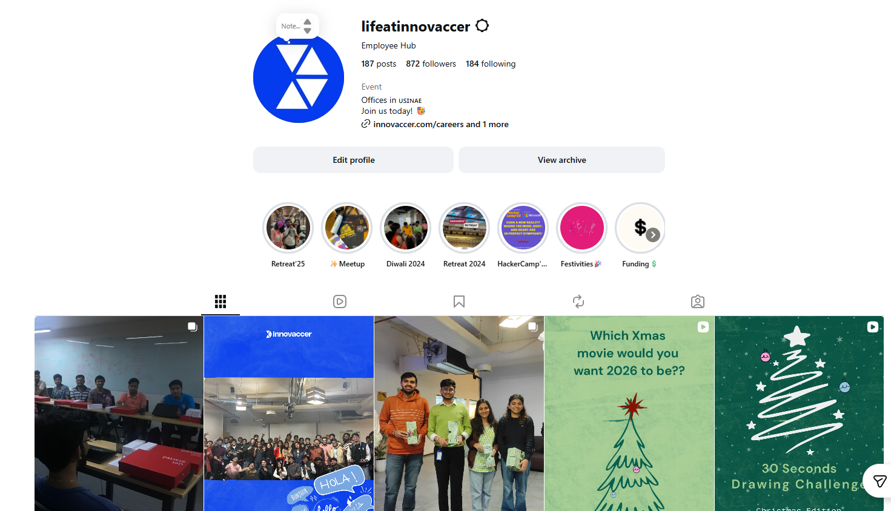
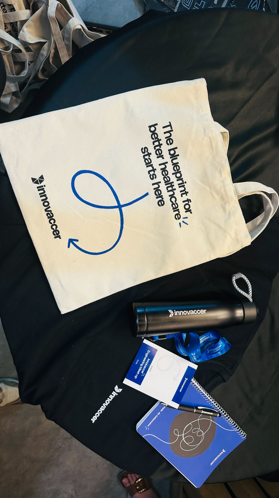

selected work
Projects that
moved the needle.
tap any card for the full story

brand visibility
Social Brand Campaigns
10+ A/B tested campaigns across LinkedIn and Instagram. Weekly posts spanning POV wins, Day in the Life, advent calendars, awards, and employee stories.
63%↑
community & events
Offline Events Program
Built the entire program from zero. Design, Product, Marketing, Tech, Data & AI meetups. End-to-end ownership: backend, vendors, website launch, on-ground.
500+
reputation
Employer Reputation
GPTW registration, case study, negotiations. Glassdoor sentiment analysis, trend-based responses, advocacy strategy, themed awareness campaigns.
100%
digital brand
LinkedIn Life Tab
Redesigned the wireframe via competitor benchmarking, content strategy and cross-channel alignment. Three dedicated subtabs. A talent magnet that converts.
27.4K
internal comms
Comms & Content Pipeline
5 quarterly newsletters, R&R mailers, Town Halls, welcome posts, year-end recaps, policy wireframes, event playbooks, employer branding SOPs.
5 ✦
alumni & talent
Alumni Community
Built the community plan, LinkedIn engagement posts, scouted alumni, handled data, extended invites and ran ongoing engagement. Rehire costs cut sharply.
40%↓
wellness + branding
Vedanta Delhi Half Marathon
Without sponsorship budget, turned employee self-participation into a brand visibility moment via branded tees. Owned comms, design, procurement.
29 ✦
campus branding
IIT KGP Spring Fest
Managed the full sponsorship end-to-end, from relationship building to on-ground activations. Boosted campus visibility and opened a fresh recruitment pipeline.
✦
brand rollout
Brand Guidelines Adoption
When the company rebranded, I drove 100% adoption across department-wide collaterals in under a month, with templates, checklists and active compliance reviews.
1 mo
hiring templates
JD & TA Asset Library
Authored JD writing guidelines and hiring templates adopted India + US. Plus 'About the Company' and Benefits Guide decks shown to candidates.
IN · US
operations
Vendor Management
Initial discussions, sampling, approvals, purchase orders, invoices and quality checks for every creative and print deliverable. Zero slippage.
E2E